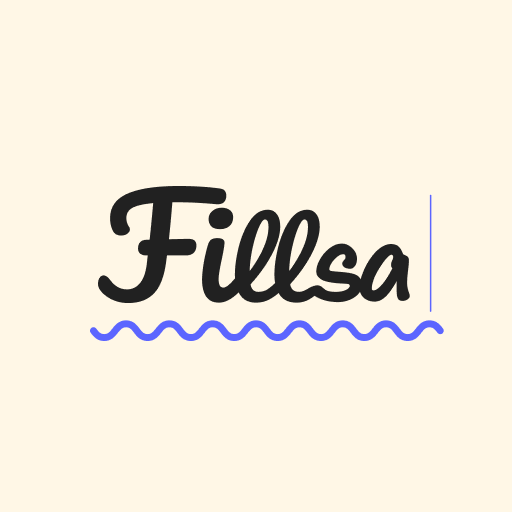

Notion 제보 당시 첨부 · 아이콘 Fillsa / 런처 FiilsaFigma 목표 · 브랜드 표기 규칙 103:1907

Figma 목표 · Play Store 아이콘 446:776
Android 앱 이름 Fiilsa → Fillsa QA 계획 v1
1. 선택·승인 기록
Notion: 앱 이름 Fiilsa → Fillsa 변경, 410e639f-c7a4-8069-be54-f0fd36673026. 생성 2026-11-06 09:06 UTC, 최종 수정 09:09 UTC. Status Not started, Priority 높음, Device iOS, Android, Category·화면 미기재.
계획 v1 / 단계: 수정·검증 진행. 사용자가 이 HTML 계획을 연 뒤 “진행”이라고 답해 1번 Android 런처 라벨 Fillsa 변경을 승인했다. 다른 이슈·iOS는 승인 범위가 아니다. 다음 행동: 이 계획대로 수정·검증하고 이슈별 QA·보고서를 작성한다.
기준 리비전 8aee2aafc7b76d705ffb1e3c6b5296aa872a1e03. 기존 미커밋 변경 app/.DS_Store, fastlane/report.xml 보존.
2. 원본 요구와 Figma 근거
Notion 본문은 빈 문단과 첨부 이미지 1건이다. 댓글은 0건으로 확인했다. 첨부에서는 아이콘 내부가 Fillsa, 홈 화면 앱 라벨이 Fiilsa로 보인다. 첨부의 플랫폼·빌드 정보는 확인되지 않았으며 현재 Android 소스 실행 증거는 아니다.
Figma에는 Android OS 런처 라벨이 놓인 전체 프레임이 없다. 따라서 글자 표기는 Figma로 확정하지만 런처 전체 화면의 픽셀 단위 시각 승인은 할 수 없다. 화면 문서에 이 제한과 대상 노드를 기록했다.
3. 수정 전 AS-IS와 재현 상태
현재 소스의 app/src/main/AndroidManifest.xml은 애플리케이션 라벨을 @string/app_name으로 참조하고, app/src/main/res/values/strings.xml의 값은 필사다. Fiilsa는 현재 app/src에 없다. Notion 캡처는 플랫폼·빌드가 식별되지 않아 현재 Android 소스의 출력이라고 단정할 수 없다. 현재 Android 앱의 런처 라벨은 아직 캡처하지 못했다.
rg로 app_name 참조를 확인했다. app manifest 한 곳이 런처 라벨을 사용하며 presentation, domain, data 각 모듈의 별도 app_name은 라이브러리 리소스다. 설치 패키지 ID com.arakene.fillsa와 로그인 redirect scheme은 표시 이름과 별개다.
현재 앱의 실행 화면이나 iOS 구현은 시각 기준으로 사용하지 않는다. 변경 전 Android 빌드·런처 캡처는 구현 직전에 확보한다.
4. 원인과 해결 설계 / TO-BE
확정 원인: 현재 Android 소스의 앱 라벨 리소스가 Figma 브랜드 표기 Fillsa와 다르다. 제보 캡처의 Fiilsa가 어느 플랫폼·빌드에서 생성됐는지는 확인되지 않았다.
권장안: app/src/main/res/values/strings.xml의 app_name 값만 Fillsa로 변경한다. OS는 manifest가 참조한 문자열을 런처·앱 정보에 노출한다. 앱 아이콘과 패키지 ID는 그대로 둔다.
대안: manifest에 Fillsa를 직접 적을 수도 있으나 리소스 참조 구조를 버리므로 권장하지 않는다. 앱 전역 문자열을 일괄 치환하면 패키지 ID·OAuth redirect·저장 데이터·배포 식별자에 영향을 주므로 범위에 넣지 않는다.
상태·이벤트·데이터/API 계약은 변경되지 않는다. 이 변경은 Compose/ViewModel/domain/data를 거치지 않는 Android 리소스 표시 경로다. 실패·경계 조건은 앱 업데이트 후 런처 캐시가 이전 라벨을 유지하는지, Android locale에 관계없이 Fillsa인지 확인하는 것이다.
5. 변경 순서와 검증 조건
기존 앱의 manifest 리소스 값과 설치된 Android 런처 라벨을 별도 기록한다. 플랫폼이 식별되지 않은 제보 당시 Fiilsa 캡처와 현재 Android 소스 필사를 혼동하지 않는다.
app 모듈의 app_name 한 값을 Fillsa로 바꾼다. 호출자나 리소스 qualifier가 추가로 발견되면 계획 범위 안에서 함께 수정한다. 아이콘, package ID, 앱 내부 화면은 수정하지 않는다.
:app:assembleDebug 빌드와 병합 manifest/aapt의 앱 라벨을 검사한다. 기존 앱을 데이터 삭제 없이 업데이트 설치하고, API/locale 조건을 고정한 런처와 앱 정보 화면에서 Fillsa가 보이는지 캡처한다. 업데이트·신규 설치를 구분한다.
화면 문서와 이슈별 QA 기록에 수정 전/후·Figma 표기 근거를 남기고 AS-IS/TO-BE HTML을 만든다. Compose Preview는 OS 런처 라벨을 렌더할 수 없어 적용 대상이 아니다.
6. 완료 판단·위험·복구
Fillsa 리소스, 병합 manifest, 기존 설치 업데이트 후 실제 런처 라벨이 일치해야 기능/문구 검증을 통과한다. 전체 런처 프레임은 Figma 기준이 없어 UI 최종 Pass로 표시하지 않고 제한을 보고한다.
표시 이름 변경은 앱 데이터 삭제를 요구하지 않는다. 패키지 ID를 바꾸면 기존 설치와 로그인 데이터가 분리되므로 이 계획에서 금지한다. 문제가 생기면 문자열 값만 이전 상태로 되돌린다.
사용자 판단 필요: Figma에 없는 런처 전체 프레임 시각 검증을 별도 완료 조건으로 요구할지. 본 계획은 Figma의 명시적 브랜드 표기와 실제 OS 라벨만 검증하고 전체 시각 판정은 Blocked로 남긴다.